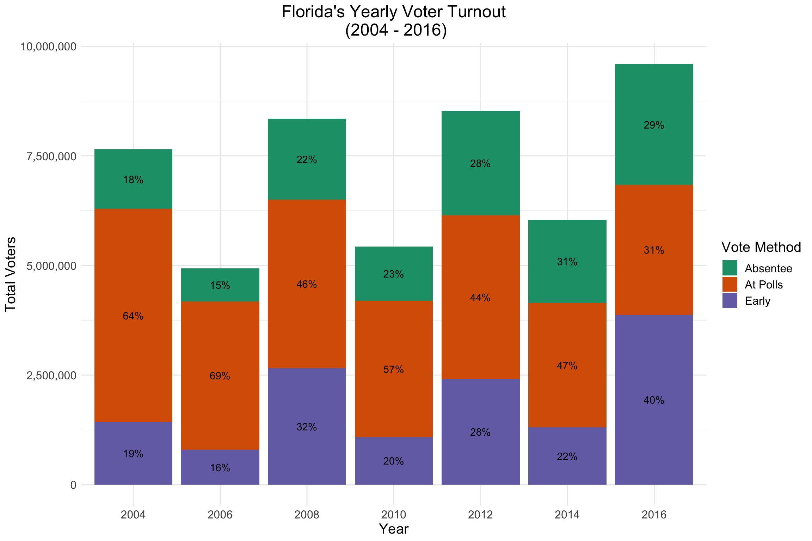

Extracting Data From Web-Based PDF Files

Introduction
Many times there are multiple data sets that we’d like to download from a website. Sometimes we are fortunate enough that the data is stored in multiple csv files within a zipped folder or under a common link. But what if the data is not centrally stored in a single zipped file or is not in csv format? For this post we will extract data that is stored in multiple pdf files from the Florida Division of Elections website.
Pulling the data
Let’s utilize the html_nodes and html_attr functions from the rvest package to extract all links from the webpage then zoom in on only the pdf documents.
library(tidyverse)
library(knitr)
library(kableExtra)
library(rvest)
library(scales)
library(pdftools)
url <- "http://dos.myflorida.com/elections/data-statistics/elections-data/general-election-summaries/"
#extract link names from page
links <- read_html(url) %>%
html_nodes("a") %>%
html_attr("href")
#detect pdf files we need
pdf_links <- links[str_detect(links, ".pdf")]
pdf_links## [1] "/media/697842/2016-ge-summaries-ballots-by-type-activity.pdf"
## [2] "/media/697841/2016-ge-summaries-provisional-voting.pdf"
## [3] "/media/697839/2016-ge-summaries-poll-workers.pdf"
## [4] "/media/697840/2016-ge-summaries-precincts-and-polling-sites.pdf"
## [5] "/media/694976/2014ballotscast.pdf"
## [6] "/media/694977/2014provisionalballots.pdf"
## [7] "/media/694978/2014pollworkers.pdf"
## [8] "/media/694975/2014pollingsites.pdf"
## [9] "/media/693340/2012ballotscast.pdf"
## [10] "/media/693345/2012provisionalballots.pdf"
## [11] "/media/693338/2012pollworkers.pdf"
## [12] "/media/693339/2012pollingsites.pdf"
## [13] "/media/693353/2010ballotscast.pdf"
## [14] "/media/693336/2010provisionalballots.pdf"
## [15] "/media/693337/2010pollworkers.pdf"
## [16] "/media/693355/2010pollingsites.pdf"
## [17] "/media/693351/2008ballotscast.pdf"
## [18] "/media/693354/2008provisionalballots.pdf"
## [19] "/media/693352/2008pollworkers.pdf"
## [20] "/media/693349/2008pollingsites.pdf"
## [21] "/media/693346/2006ballotscast.pdf"
## [22] "/media/693348/2006provisionalballots.pdf"
## [23] "/media/693350/2006pollworkers.pdf"
## [24] "/media/693347/2006pollingsites.pdf"
## [25] "/media/693341/2004ballotscast.pdf"
## [26] "/media/693836/2004provisionalballots.pdf"
## [27] "/media/693343/2004pollworkerinfo.pdf"
## [28] "/media/693342/2004pollingsites.pdf"Based on the output we see that there are 28 unique links with the .pdf extension. Our main focus is the voter turnout data for the 2004 to 2016 general elections. This data is contained in the ballotscast.pdf for 2004 to 2014 and in summaries-ballots-by-type-activity.pdf for 2016. Now that we know which links contain the relevant data we can extract them using str_detect. Let’s use ballotscast and type as keywords for identifying the necessary pdf files.
data_links <- pdf_links[str_detect(pdf_links,"ballotscast|type")]
data_links## [1] "/media/697842/2016-ge-summaries-ballots-by-type-activity.pdf"
## [2] "/media/694976/2014ballotscast.pdf"
## [3] "/media/693340/2012ballotscast.pdf"
## [4] "/media/693353/2010ballotscast.pdf"
## [5] "/media/693351/2008ballotscast.pdf"
## [6] "/media/693346/2006ballotscast.pdf"
## [7] "/media/693341/2004ballotscast.pdf"Great! We are now left with seven links. Upon viewing all of the pdf files we see that each file has the data in the same sequence of columns. Thus it’s easy to create a function, extract_data, to extract the data from each pdf file and turn it into a dataframe. The logic follows:
Append the .pdf protion of each link to the base url and use
pdf_textto read the lines of each fileBuild a dataframe where each row corresponds to a line in the pdf file
Crete a regular expression that extracts any row that contains vote data. For example,
alachua 50,491 51,097 29,040 993, is a row that contains vote data. We see that it’s the county name followed by four different vote counts. For data from 2004 to 2010 there would only be three vote counts as provisional data was not included for these yearsCreate regular expressions to extract the county and number of votes from each row. Additionally, we’ll extract the year from the
data_linksand append it to the dataframeUse
map_dfto execute this function on each of thedata_linksand return a dataframe of vote data from all the years.
extract_data <- function(data_links){
txt_file <- pdf_text(paste0("http://dos.myflorida.com", data_links))
raw_txt <- str_split(txt_file, "\n") %>%
unlist() %>%
tibble() %>%
rename("col1" = ".") %>%
mutate_all(tolower) %>%
mutate(col1 = str_squish(str_remove_all(col1, ",")),
vote_data = str_detect(col1, "\\w+(\\s\\d+){3,4}")) %>%
filter(vote_data == TRUE) %>%
mutate(vote_count = str_extract(col1, "(\\d+\\s){1,}\\d+"),
county = str_extract(col1, "\\w+( |.)?( )?[[:alpha:]]+"),
year = str_extract(data_links, "20\\d{2}")) %>%
filter(!str_detect(county,"total")) %>%
separate(vote_count, c("At Polls", "Early", "Absentee", "provisional")) %>%
select(county,year, `At Polls`, Early, Absentee)
}
df <- map_df(data_links, extract_data)
head(df)## # A tibble: 6 x 5
## county year `At Polls` Early Absentee
## <chr> <chr> <chr> <chr> <chr>
## 1 alachua 2016 50491 51097 29040
## 2 baker 2016 3584 7180 2003
## 3 bay 2016 25579 43963 18952
## 4 bradford 2016 5095 4675 2450
## 5 brevard 2016 109623 118427 92708
## 6 broward 2016 213112 426592 202904Now let’s inspect the data to ensure it’s correct. There are 67 counties in Florida and we are extracting vote data for seven years. Thus, each county should appear exactly seven times in the dataframe.
df %>%
count(county) %>%
filter(n != '7')## # A tibble: 2 x 2
## county n
## <chr> <int>
## 1 miami-dade 5
## 2 miami‐dade 2It appears that miami-dade has two different formattings. Let’s change this and recheck the data.
df$county <- str_replace(df$county, "miami‐dade", "miami-dade")
df %>%
count(county) %>%
kable() %>%
kable_styling() %>%
scroll_box(height = "400px")| county | n |
|---|---|
| alachua | 7 |
| baker | 7 |
| bay | 7 |
| bradford | 7 |
| brevard | 7 |
| broward | 7 |
| calhoun | 7 |
| charlotte | 7 |
| citrus | 7 |
| clay | 7 |
| collier | 7 |
| columbia | 7 |
| desoto | 7 |
| dixie | 7 |
| duval | 7 |
| escambia | 7 |
| flagler | 7 |
| franklin | 7 |
| gadsden | 7 |
| gilchrist | 7 |
| glades | 7 |
| gulf | 7 |
| hamilton | 7 |
| hardee | 7 |
| hendry | 7 |
| hernando | 7 |
| highlands | 7 |
| hillsborough | 7 |
| holmes | 7 |
| indian river | 7 |
| jackson | 7 |
| jefferson | 7 |
| lafayette | 7 |
| lake | 7 |
| lee | 7 |
| leon | 7 |
| levy | 7 |
| liberty | 7 |
| madison | 7 |
| manatee | 7 |
| marion | 7 |
| martin | 7 |
| miami-dade | 7 |
| monroe | 7 |
| nassau | 7 |
| okaloosa | 7 |
| okeechobee | 7 |
| orange | 7 |
| osceola | 7 |
| palm beach | 7 |
| pasco | 7 |
| pinellas | 7 |
| polk | 7 |
| putnam | 7 |
| santa rosa | 7 |
| sarasota | 7 |
| seminole | 7 |
| st. johns | 7 |
| st. lucie | 7 |
| sumter | 7 |
| suwannee | 7 |
| taylor | 7 |
| union | 7 |
| volusia | 7 |
| wakulla | 7 |
| walton | 7 |
| washington | 7 |
Finally, the data is in a dataframe! Let’s pause for a round of applause.

Data Visualization
Let’s visualize the data to reveal any trends
data <- gather(df, vote_type, votes, 3:5, -c(1:2))
to_plot <- data %>%
group_by(year,vote_type) %>%
summarise(total = sum(as.numeric(votes))) %>%
mutate(percentage = total/sum(total))
to_plot$year <- factor(to_plot$year, levels = c("2004","2006","2008","2010","2012","2014","2016"))
ggplot(to_plot, aes(x = year, y = total, fill = vote_type))+
geom_col()+
labs(x = 'Year',y = 'Total Voters', title = 'Florida\'s\ Yearly Voter Turnout\n (2004 - 2016)',
fill = 'Vote Method')+
scale_y_continuous(labels = comma)+
geom_text(aes(label = paste0(round(percentage*100),"%")), position = position_stack(vjust = 0.5))+
scale_fill_brewer(palette = "Dark2")+
theme_minimal()+
theme(plot.title = element_text(hjust = 0.5),
text = element_text(size = 15))
Based on the above chart we observe a few things:
The turnout for years 2004, 2008, 2012 and 2016 is higher than the other years. This is because these were presidential election years and people are more likely to vote in a presidential election than in a midterm general election.
There is an upward trend to the data, especially for presidential election years. The turnout in 2016 was almost 10,000,000.
Election day voting has been decreasing for each of the presidential and midterm elections. In 2004, 64% of voters voted on election day but only 31% of voters voted on election day in 2016. This is about a 50% drop in election day voting.
Early voting accounted for 40% of all voters in 2016 compared to 28% in 2012. The 2016 presidential election was somewhat of a political storm and turnout was expected to be significantly higher than usual. As a result, a larger portion of people may have chosen early voting to avoid the hassle of voting on election day.
Conclusion
At times the data needed for analysis is not readily available. As data analysts, data scientists, and sometimes statisticians it is part of our jobs to be equipped with the skills needed to extract and tidy data in both structured and unstructured format. This post provided a brief introduction on how we can extract structured data from web-based files, tidy and then visualize the data to gain insights.
An interactive chart was created to allow the user to view the turnout within a specific county and can be found here